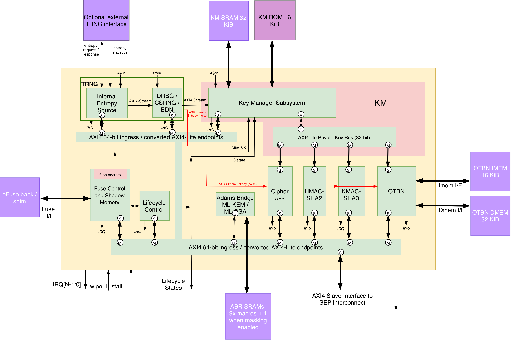

Cryptographic Subsystem
The cryptographic subsystem is composed of hardware and software. The hardware subsystem has a number of accelerators interconnected by two distinct buses:
-
AXI4 data and CSR bus
-
Mastered by the SEP system fabric
-
-
AXI4-lite secret key buses
-
Mastered by Key Manager
-
Apart from the Adams Bridge, a Post-Quantum Cryptography (PQC) accelerator vendored from Caliptra, the subsystem’s hardware components are modified versions of the OpenTitan components, and the firmware is also based on the OpenTitan cryptographic library. Generated PeakRDL maps for the Key Manager, entropy source, and the other crypto CSRs are included in the Detailed Register Map.
The primary modifications to the hardware is the separation of the key and data bus interfaces and the switch from TL-UL interface protocol to AXI4-lite. In OpenTitan, keys are transferred from the Key Manager to the Cryptographic accelerators via dedicated ``side loading'' interfaces. While this does physically separate key and data transport it is not scalable and requires modifications to the Key Manager whenever a new accelerator is added to the subsystem.
Adams Bridge requires 13 SRAM macros with masking enabled (default), or 9 with masking disabled.
SEP cryptographic subsystem and external memory interfaces shows the accelerator interconnect, Key Manager paths, and external memory interfaces.

The integrator must instantiate the Adams Bridge working SRAMs outside SEP and
connect them through the dedicated abr_mem request/response interface.
For the memory interface and configuration requirements, see
SEP Memory Interfaces in the Integrator Guide.
The sep_crypto module implements the integration layer, with
sep_crypto_axi_interconnect centralizing its bus infrastructure. A single
64-bit AXI slave port from the SEP system fabric is decoded to the accelerators
and internal peripherals. The host paths to OTBN, HMAC, AES, KMAC, ESRC, CSRNG,
and EDN are converted to AXI4-Lite before isolation, with data-width conversion
where required by the endpoint. The OpenTitan wrappers then bridge the isolated
AXI4-Lite paths to TL-UL.
The Key Manager drives private AXI4-Lite key buses to the accelerator wrappers, which map key words into the sideload structures expected by the OpenTitan cores. These buses are independently isolated so that they drain before either the Key Manager or the destination accelerator enters software reset.
Each accelerator has its own software-controllable reset. The SEP Reset Controller drains and isolates both its host and Key Manager paths before asserting reset; a Key Manager reset similarly drains all of its key paths. The entropy source, CSRNG, and EDN share one coordinated reset. See SEP Reset Controller and Resetting the TRNG.
1. OpenTitan Alert Termination
SEP does not instantiate OpenTitan’s alert_handler. Each OpenTitan crypto
alert channel is terminated locally by a prim_alert_receiver in sep_crypto.
That primitive decodes the sender’s differential alert_p/alert_n handshake
and pulses alert_o when the handshake starts; a malformed encoding raises
integ_fail_o. Alert ping is disabled (ping_req_i tied 0); ping_ok_o is
unused.
PIC sources are in SEP CPU Interrupt Vector Map. A receiver’s pulse and integrity-fail stay per-block at the receiver. SEP crypto alert and fault routing shows which of those, the native error IRQs, and the bridge faults are OR’d onto a PIC source and which are not.
| Block | OT alert channels | Alert PIC | Native error IRQ | Bridge err_o |
|---|---|---|---|---|
HMAC |
|
OR into Crypto alert |
dedicated PIC |
STATUS bit; OR into Peripheral register-bridge fault |
OTBN |
|
OR into Crypto alert |
none |
STATUS bit; OR into Peripheral register-bridge fault |
AES |
|
OR into Crypto alert |
none |
STATUS bit; OR into Peripheral register-bridge fault |
KMAC |
|
OR into Crypto alert |
dedicated PIC |
STATUS bit; OR into Peripheral register-bridge fault |
CSRNG |
|
OR into Crypto alert |
dedicated PIC |
STATUS bit; OR into Peripheral register-bridge fault |
EDN |
|
OR into Crypto alert |
dedicated PIC |
STATUS bit; OR into Peripheral register-bridge fault |
Adams Bridge and the entropy source do not go through this conversion.
The Crypto alert source is the OR of every receiver pulse and integrity-fail, so
that interrupt does not name the block. Native error IRQs are not OR’d. HMAC,
AES, KMAC, OTBN, CSRNG, and EDN convert isolated AXI4-Lite to TL-UL through
axi_lite_to_tlul; each bridge’s sticky err_o is that wrapper’s bus_err_o,
visible as one bit in PERIPH_BUS_ERR_STATUS and cleared with the matching
PERIPH_BUS_ERR_CLEAR bit. The Peripheral register-bridge fault source is the OR
of those bits and the watchdog timer’s bridge fault. Acknowledging one STATUS
bit cannot discard another.
The crypto complex uses whole-instance Class 2 scan boundaries so all
sequential key, round-key, digest-working, seed, and random-distribution state
is covered without per-register marking. The marked roots in sep_crypto are
u_hmac_wrapper_s3c_scan, u_sep_crypto_otbn_wrapper_s3c_scan,
u_aes_wrapper_s3c_scan, u_kmac_wrapper_s3c_scan,
u_sep_crypto_abr_wrapper_s3c_scan, u_entropy_source_s3c_scan,
u_drbg_s3c_scan, u_axis_edn_crypto_s3c_scan, and
u_key_manager_s3c_scan. The integration module itself, public bus
infrastructure, and combinational entropy muxes are not Class 2 roots.
2. Single-Beat Access Only
The sep_crypto demux accepts single-beat transactions only. Any access whose
AxLEN is non-zero is routed to the internal error slave and answered with
DECERR on every beat, whatever its address; no beat reaches an accelerator.
Software must access the whole crypto region with single-beat transactions.
3. Key Manager Key Delivery
The Key Manager delivers keys and seeds to the crypto accelerators over a
private key interface that software cannot read. Every delivery uses the same
format: the value is carried as two shares whose XOR is the value, and each
share is presented as a sequence of 32-bit words in the KEY_SHARE0 and
KEY_SHARE1 registers of the destination. Within a share, word index N carries
value bits [32N+31:32N], so index 0 is the least-significant word and the
highest index is the most-significant.
Both shares are always consumed. Delivering a value V therefore requires two
shares whose XOR is V; writing a single share delivers V only because the
unwritten share reads as zero. KEY_CTRL.KEY_VALID qualifies the delivered
value, and while it is 0 the destination has no valid key or seed.
The words per share, whether software must select the delivered key in preference to the accelerator’s own software key registers, whether software must also declare the key length, and the behavior on an invalid or mismatched key are accelerator-specific. They are stated in the accelerator reference pages and summarized in Key Manager key delivery per accelerator.
| Accelerator | Words per share | Select delivered key | Key length | Invalid or mismatched key |
|---|---|---|---|---|
HMAC |
8 (256-bit) |
Not required |
|
Digest is wrong but repeatable; no error |
AES |
8 (256-bit) |
|
|
Delivered key ignored while the select bit is 0; no error |
KMAC |
8 (256-bit) |
|
Applied automatically |
Keyed operation raises an error |
OTBN |
12 (384-bit) |
Not required |
Not applicable |
|
ABR |
8 per block (256-bit) |
Seed read enable |
Not applicable |
Seed read does not complete |
Cryptographic subsystem reference pages: